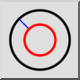

Đồng tâm (với khoảng cách)
Thanh công cụ / Biểu tượng:


Trình đơn: Vẽ > Đường tròn > Đồng tâm (với khoảng cách)
Phím tắt: C, C
Lệnh: circleconcentric | cc
Thanh công cụ / Biểu tượng:


Với công cụ này, bạn có thể tạo một hoặc nhiều đường tròn đồng tâm với một khoảng cách cho trước đến một đường tròn hiện có.